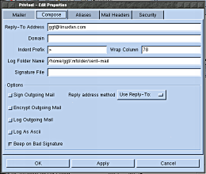

[Reading mail] [Writing mail] [Folders] [Configuration]
Configuration | Most of Privtool can be configured using the Properties
window which is accessed via the Edit->Properties menu item. This is a notebook style
window with the various aspects of Privtool having their own page of options.
Any changes to the configuration will only be saved upon pressing the OK or Apply buttons. Some of these windows contain a grid area into which text can be entered. There will always be one extra row for entering new data, if you start typing in the last row another row will automatically be created. Also enpty rows are ignored. MailerThe first page presents general mailer configuration options. These are:
| ||||||||||||||||||||||||||
|  |
ComposeThese configuration options pertain to composing email.
| ||||||||||||||||||||||||||
AliasesThis window contains personal mail address aliases. It is not a full featured address book, there is simply a column for the alias and a column for the full email address. | |||||||||||||||||||||||||||
Mail HeadersThis window contains a number of check boxes for selecting which headers should be displayed by default. Of course all headers can be displayed by using the View->Full Header menu item. | |||||||||||||||||||||||||||
SecurityThese properties affect the behaviour of the PGP & security aspects of Privtool.
| |||||||||||||||||||||||||||
{kind=link}
{kind=link}
{kind=link}
{kind=link}
{kind=link}